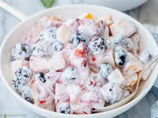

Fruit-salad recipe

Ingredients
- 2 red or green apples
- 3 peeled tangerines or small oranges
- 15 black or green grapes
- 2 peeled medium bananas
- 2 peeled kiwi fruits
- 2 fresh large thick slices of pineapple
- 2 glasses of fresh unsweetened orange juice - note: you can also use pineapple or apple juice
What you will need to prepare it
- Chopping board
- Cutting knife
- Mixing bowl
- Slotted spoon
Steps
- Wash the apples and then cut into quarters. Cut into large pieces
- Cut up the tangerines or oranges into segments
- Wash the grapes and cut into half each one
- Cut bananas and kiwi fruits into slices
- Cut pineapple into large pieces
- Pour all fruits in the bowl, add the orange juice and mix well
Serving suggestion
Serve on its own or with a scoop of ice cream or with block ice